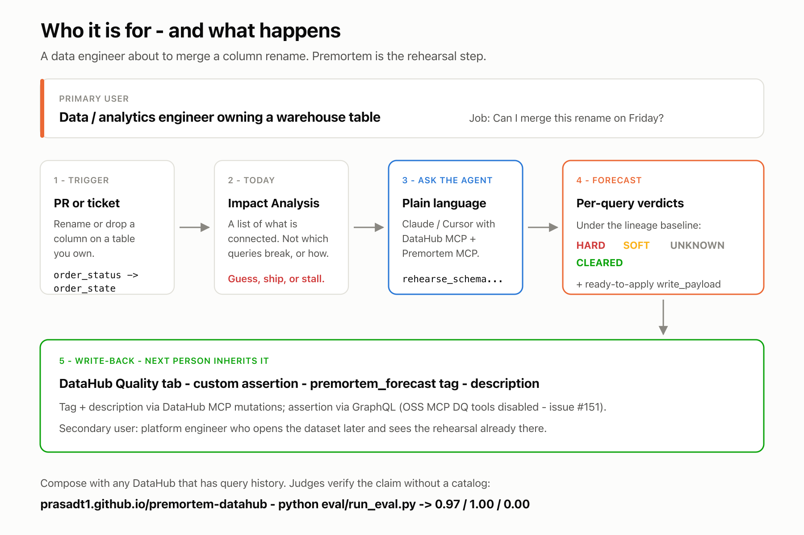
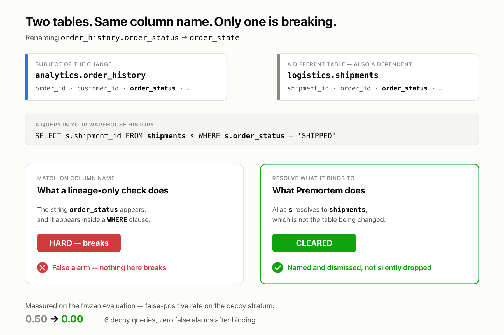
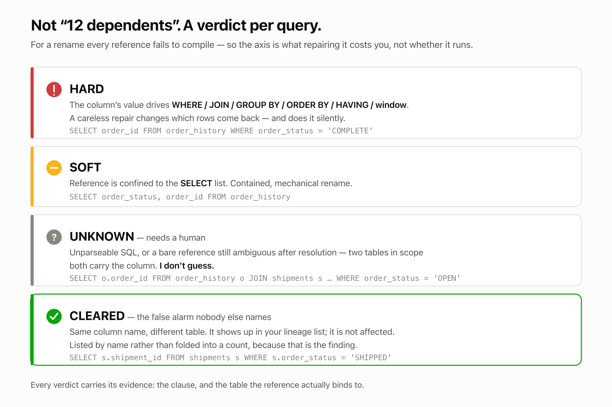
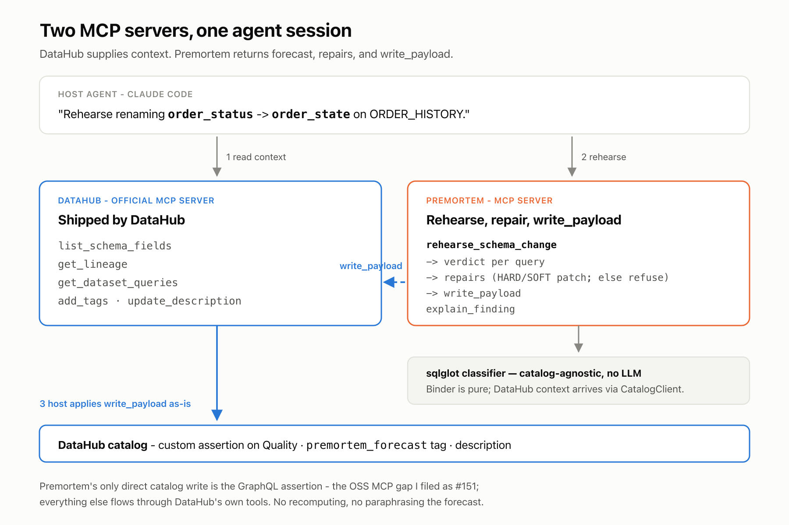
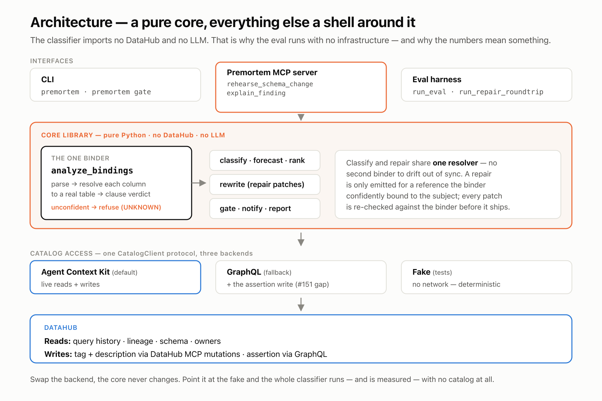
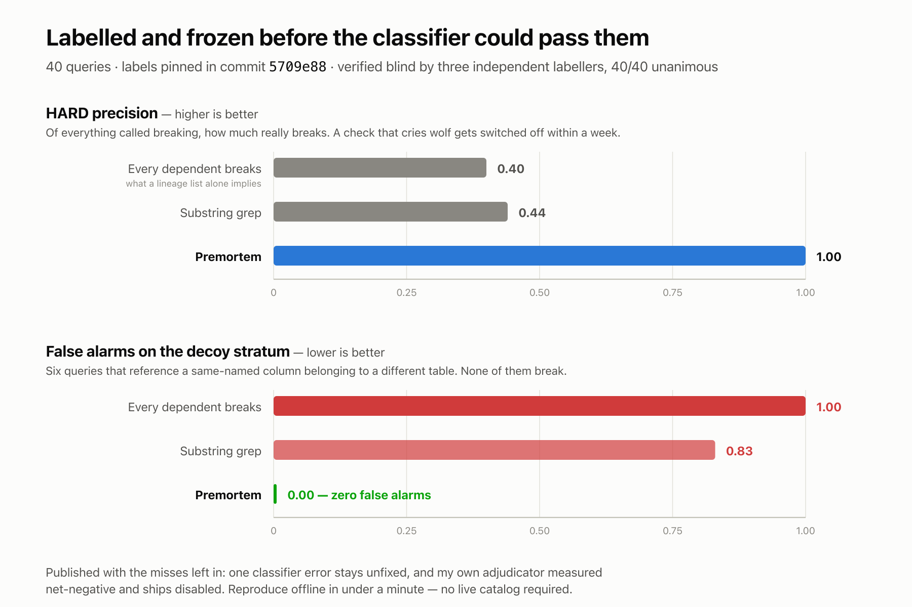

Premortem
how it breaks, before you merge
A schema-change rehearsal agent for DataHub. Starting from Impact Analysis, it reads warehouse SQL from query history and forecasts how each consumer breaks — HARD, SOFT, UNKNOWN, or CLEARED — then repairs what it can, gates the PR, notifies owners, and writes the forecast back into the catalog.
(Premortem binder · n=15)
(Premortem binder · n=6)
(39/40 · truncated)
Reproduce in under a minute — offline, no live catalog required.
pip install -e ".[dev]"
pytest -q
python eval/run_eval.pyWho it is for
Primary user: a data / analytics engineer about to merge a column rename — “Can I ship this on Friday?” Secondary: a platform engineer who later opens the dataset and inherits the forecast. Premortem composes with DataHub via MCP; it is not a UI fork and not a hosted catalog you must stand up to judge the claim.

What Premortem does
Full path in seven beats — from DataHub Impact Analysis through forecast, repair, gate, notify, and catalog write-back. Binding is the differentiator inside the forecast; the verbs after it are the product.
Step 1 of 7 — Start from DataHub
order_statusorder_state
on ORDER_HISTORY
Lineage lists what is connected. Premortem rehearses the rename against real query history before you merge.
The binding problem

order_status exists on two tables.
Name matching flags this query as breaking; Premortem binds the alias to
shipments, sees it is not the subject table, and clears it.
That distinction took decoy false positives from 0.50 to 0.00.
A real forecast, rendered
Sample output from the constructed demo instance (not interactive) —
rename order_status → order_state on
ORDER_HISTORY, Impact Analysis baseline 3 downstream dependents.

HARD (5)
emitter_hard_where
SELECT order_id FROM order_history WHERE order_status = 'COMPLETE'
emitter_unknown_bare
SELECT o.order_id FROM order_history o JOIN customers c ON o.customer_id = c.customer_id WHERE order_status = 'OPEN'
hard_qualified_join
SELECT o.order_id FROM order_history o JOIN customers c ON o.customer_id = c.customer_id WHERE o.order_status = 'OPEN'
hard_where_order_status
SELECT order_id, customer_id FROM order_history WHERE order_status = 'COMPLETE'
unknown_bare_join
SELECT o.order_id, c.customer_id FROM order_history o JOIN customers c ON o.customer_id = c.customer_id WHERE order_status = 'OPEN'
SOFT (2)
emitter_soft_select
SELECT order_status, order_id FROM order_history
soft_select_order_status
SELECT order_status, order_id, order_total FROM order_history
UNKNOWN (1)
unknown_bare_two_tables
SELECT o.order_id FROM order_history o JOIN shipments s ON o.order_id = s.order_id WHERE order_status = 'OPEN'
unqualified order_status with 2 tables in scope; needs human/agent
CLEARED (1)
decoy_shipments_order_status
binds to shipments
SELECT s.shipment_id FROM shipments s WHERE s.order_status = 'SHIPPED'
Composition
One agent session registers two MCP servers. Live reads use the
DataHub Agent Context Kit (schema, lineage, query history).
Premortem’s server runs rehearse_schema_change and returns a
forecast, repairs[] (HARD/SOFT patches; else refuse), and
write_payload. Owners (who to warn) ride in the forecast markdown.
The host applies the payload as-is:
tag + description via DataHub MCP mutations; the custom assertion
(platform=premortem) via GraphQL — Premortem’s only direct
catalog write is that assertion (OSS MCP Data Quality tools are DISABLED —
#151).
Result on the Quality tab: assertion + premortem_forecast tag +
description — no recomputing.

Architecture
Layered architecture — a catalog-agnostic binder core (no LLM) that
composes with DataHub via one
CatalogClient protocol (Kit / GraphQL / Fake). Classify and
repair share the same binder.

python eval/run_eval.py can measure the core
offline. Classify and repair share analyze_bindings; swap
the catalog backend and the core never changes.
The numbers

C+A is net-negative: the heuristic adjudicator binds 3 of 9
classifier UNKNOWNs with bind accuracy 0.00 — every bind wrong. It ships
disabled (adjudicate=False is the live default).
That component was replaced with an LLM adjudicator that runs only on the
genuinely ambiguous residue (q05, q17, q29 — bare column, ≥2 tables that
each carry it). It correctly declined all three rather than
guessing; their gold is already UNKNOWN, so there is no measurable lift on
the frozen eval and binder-only remains the live default. Responses are
committed in
eval/llm_adjudicator_cache.json
so python eval/run_eval.py reproduces the B2 row with no API key.
Named C miss: q39 (hard → soft) in the
subquery stratum — documented limitation, not tuned against the frozen labels.
Browse it in the eval explorer.
Repair round-trip (does not touch the freeze):
python eval/run_repair_roundtrip.py — 22/22 eligible
patches pass; 18 refused (CLEARED / UNKNOWN / SELECT * /
ambiguous / no subject bind). Samples:
examples/patches/.
Merge gate:
premortem gate
(default --fail-on hard,unknown).
Against foreign SQL
Every frozen-eval number above comes from a corpus I wrote. To test
generality, I pointed the binder at
mozilla/bigquery-etl
(commit 717b6a1) — 118 queries that mention
clients_daily and client_id. There are
no gold labels, so there is no accuracy, precision, or
recall claim — coverage and failure modes only.
(18 Jinja / BQ / sqlglot gaps)
(corrected distribution)
(known non-subject tables only)
This run measures missing-schema behavior. With schemas present (a real DataHub-connected warehouse), narrowable references bind instead of abstaining; the 11% CLEARED here are qualified references to known non-subject tables. Pointed at a codebase where it lacks the schemas, Premortem says needs a human rather than guessing. An earlier unsound CLEARED rule had falsely cleared 74% of rows despite a 0.09 table-resolution rate — that defect is fixed and named in the report.
Limitation: 6 of the 13 CLEARED resolve to clients_daily while
the subject is clients_daily_v6. Correct at the table level, but
if that name is a view over the subject, a rename propagates through it.
Premortem reasons about tables, not view expansion.
Full write-up: real-world run (HTML) · source markdown on GitHub · raw JSON
Upstream contributions
Four issues filed against DataHub from this build (Quickstart v1.5.0.6,
mcp-server-datahub 0.6.0):
-
datahub#18674
—
assertionRunEventrejectsschemaFieldasserteeUrn (column-scoped custom assertions cannot record run events on OSS) - mcp-server-datahub#151 — Data Quality tools DISABLED on the OSS MCP server
- datahub#18675 — Documents create successfully but often miss Quickstart search
-
datahub#18676
—
listQueriesempty until seeded and indexed
Links
- Repository
- Frozen eval explorer — all 40 queries, gold vs binder verdict
- Real-world run — mozilla/bigquery-etl observables
- eval/RESULTS.md
- examples/patches/ — repair samples (22/22 round-trip)
- examples/ci/premortem-gate.yml — merge gate
- examples/
- Video demo: to be added